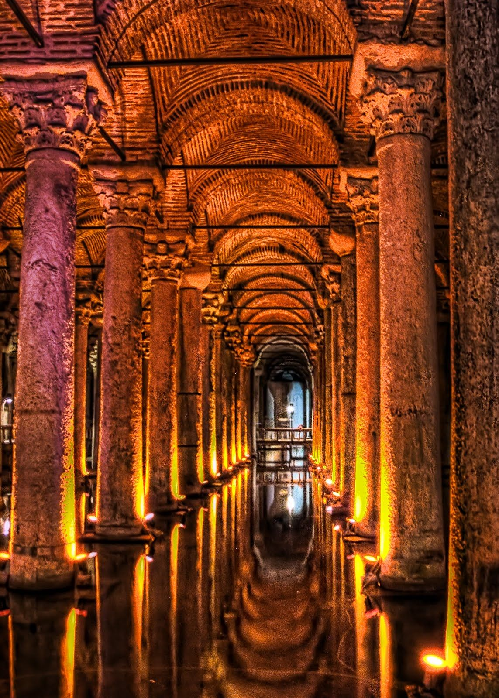
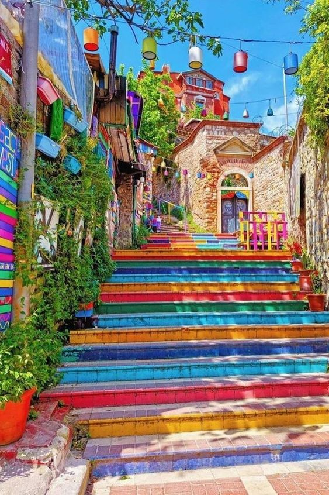
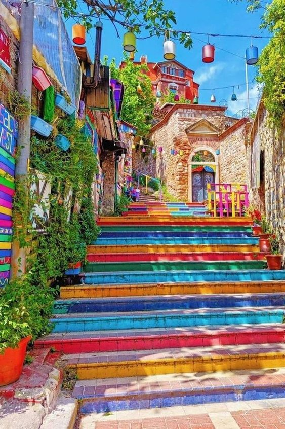
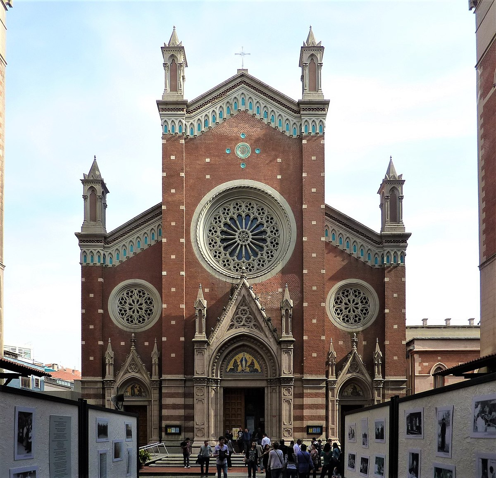
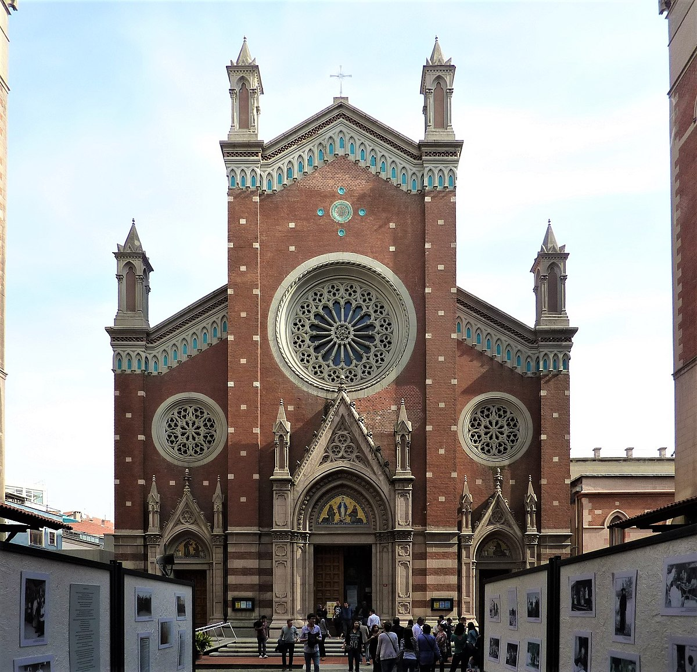
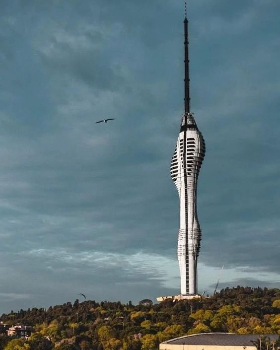
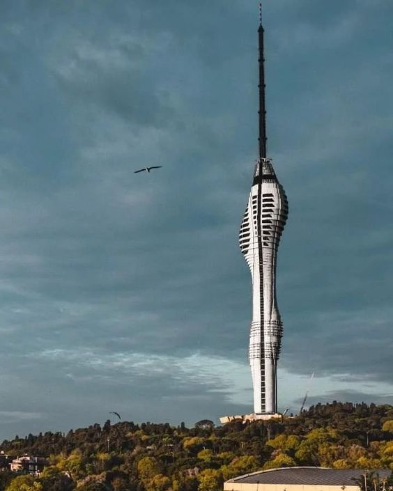
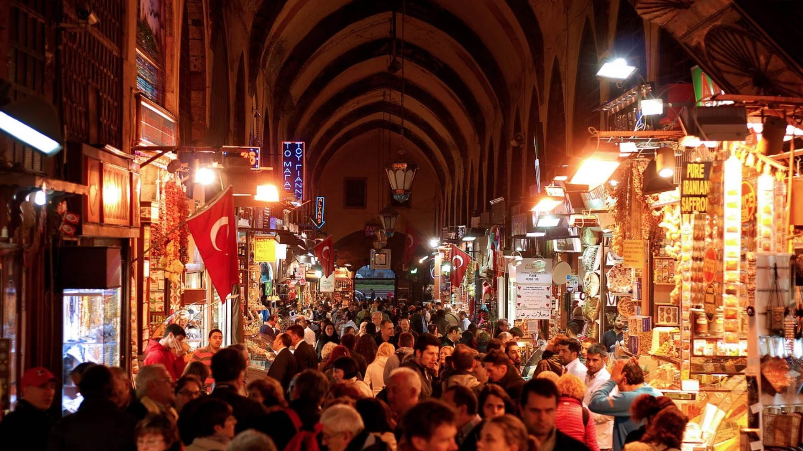
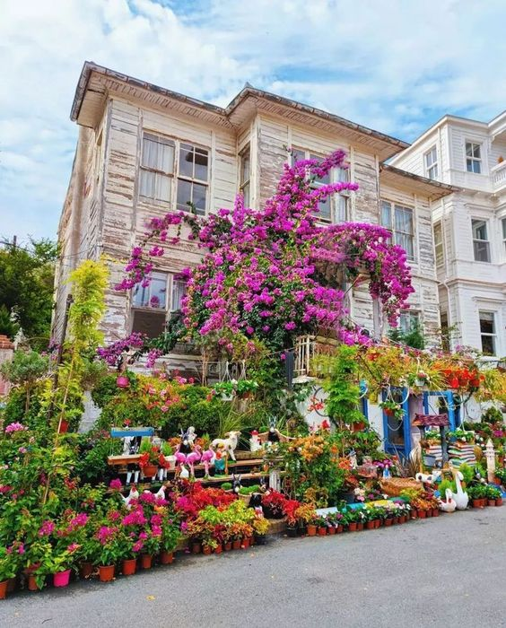
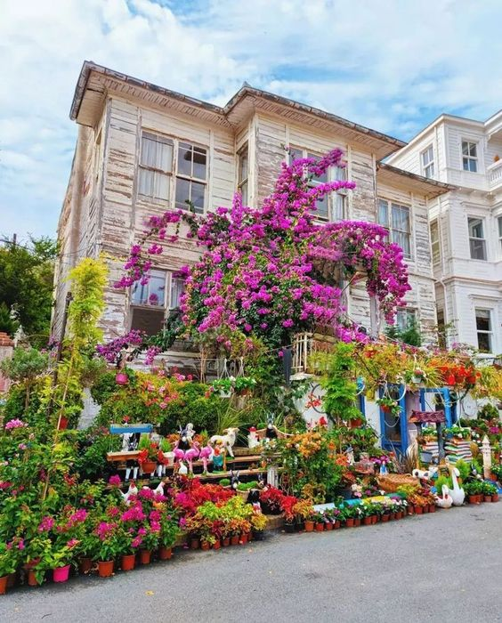

Tr
Tr  Ar
Ar  Es
Es İstanbul
İstanbul is one of the largest city in Türkiye and straddles the Bosphorus strait, which separates Europe and Asia. It is a historic city with a rich cultural heritage, having served as the capital of the Byzantine and Ottoman empires. It is known for its beautiful architecture, including the Hagia Sophia and the Blue Mosque, and its bustling markets, such as the Grand Bazaar. İstanbul is also a popular tourist destination and is considered the gateway between Europe and Asia.
Topkapı Palace

The Topkapı Palace is a historic palace located in Sultan Ahmet Area,
that was the primary residence of the Ottoman sultans for nearly 400 years. The palace was built in the 15th century and features a complex of buildings, including several courtyards, the Harem (private quarters of the sultan and his family), and various museums. The palace is known for its intricate tilework, ornate decoration, and impressive views of the Bosphorus strait and the Golden Horn. It also houses several important religious and historical artifacts, including the Topkapi dagger, Spoonmaker's Diamond and the Holy Mantle, which is believed to have belonged to the Prophet Muhammad. Today, the palace is open to the public as a museum and is a popular tourist destination, as well as a UNESCO World Heritage Site.
Basilica Cistern

The Basilica Cistern, also known as the Yerebatan sarnici (Sunken Palace) is a subterranean cistern located Sultan Ahmet area. It was built in the 6th century during the Byzantine Empire to provide a water supply for the nearby palace and city. The cistern is an underground chamber measuring approximately 140 by 70 meters and is supported by 336 marble columns. It is filled with water and is decorated with several interesting features, including Medusa head sculptures used as column bases and the upside-down heads of the Medusa. The cistern is open to the public and is a popular tourist destination and a must-see place in İstanbul. It is also used as a location for several movies, music videos, and even some photo shoots.
Blue Mosque (Sultan Ahmet Mosque)

The Blue Mosque, also known as the Sultan Ahmed Mosque, is a historic mosque located in İstanbul, Turkey. It was built in the early 17th century during the rule of Sultan Ahmed I and is considered one of the most iconic landmarks in the city. The mosque is known for its six minarets and blue tilework, which gives it its name. The interior of the mosque is also adorned with intricate tilework and calligraphy, as well as several large chandeliers. The mosque is still an active place of worship, but it also open to the public as a tourist attraction. Visitors must remove their shoes and cover their heads before entering. Visitors are also not allowed to enter during the prayer times. The Blue Mosque is also a UNESCO World Heritage site.
Fener and Balat


The Greek quarter Fener, and Jewish quarter Balat, are unique historical regions which are the most popular tourist areas in İstanbul. The history found here is definitely worth seeing. The region, which many local and foreign tourists prefer to visit and see, is quite remarkable with its antique shops, touristic cafes and restaurants.
Galata Tower

The Galata Tower is a medieval stone tower located in İstanbul. It was built in the 14th century by the Genoese colony in the city as a part of the fortifications of the Galata district. The tower stands at a height of about 66 meters and offers a panoramic view of the city from its observation deck. The tower is also known for its architecture and its design, it has a cylindrical shape with 9 floors, each of them have different usage, the ground floor is a restaurant, and the upper floors are used for observation deck and café. The tower has played an important role in the city's history and has been used for various purposes, including as a prison, a fire tower, and a watchtower. Today, the Galata Tower is a major tourist attraction and a popular spot for taking in the views of İstanbul.
The Bosphorus

The Bosphorus is a strait that runs through İstanbul, Turkey, separating Europe and Asia. It connects the Black Sea to the Sea of Marmara and the Mediterranean Sea. It is an important waterway for international shipping and is also a popular tourist destination known for its scenic views, historic landmarks, and cultural significance. Visitors can take boat tours to see the sights and enjoy the scenery. The Bosphorus bridge and the two undersea tunnels connect the two sides of the city. It is also a major spot for swimming, fishing, and water sports.
Dolmabahçe Palace

Dolmabahçe Palace It was built in the 19th century during the Ottoman Empire and served as the main residence of the sultans from 1856 to 1922. The palace features a mix of Ottoman and European architectural styles, with a grand entrance, ornate decoration, and impressive chandeliers. It is known for its opulence and grandeur, with a total of 285 rooms, 43 halls and 6 Turkish baths. It also includes the world's largest Bohemian crystal chandelier and the most extensive collection of Ottoman Empire era furniture in the world. The palace is open to the public as a museum and is a popular tourist destination, giving an insight into the luxurious lifestyle of the Ottoman sultans.
İstiklal Street

Istiklal Street is a famous pedestrian street . It is known for its lively atmosphere, historical significance and variety of shops, cafes, restaurants and bars. It also features historical buildings, such as the Galatasaray High School, the French Palace, and the St. Anthony of Padua Church. It's also home to the historic tramway that runs along the street. It's a great place to explore, shop and experience the city's culture and history. It is also a UNESCO tentative list site.
Church of St. Anthony of Padua


The Church of St. Antony of Padua is a Roman Catholic church located in Istiklal street Taksim area built in the early 17th century. It is one of the oldest churches in the city and serves as a place of worship for the Catholic community, and open for visitors to admire its architecture and learn about its history.
Maiden’s Tower

Maiden's Tower, also known as Leander's Tower, is a tower located on a small island in the Bosphorus strait in İstanbul. It is a historical and cultural site, with a rich legend and history behind it. It is a popular tourist destination and offers great views of the city. Visitors can access the tower by boat, and it is open to the public as a café and a restaurant.
Çamlıca Tower


Çamlıca Tower is a TV and radio tower located on top of Çamlıca Hill, the highest point in İstanbul. The tower offers panoramic views of the city and the Bosphorus Strait, it is open to the public and visitors can take an elevator to the top to enjoy the view.
Grand Pazaar
Kapali Carsi, also known as the Grand Bazaar, is one of the largest and oldest covered markets in the world. It is located in İstanbul, Turkey and has 61 covered streets and over 4,000 shops. The bazaar is known for its jewelry, ceramics, carpets, textiles, and souvenirs. It is a popular tourist destination and a major shopping destination for both locals and visitors to İstanbul. It dates back to the 15th century and has been an important trading center for centuries. It is also a UNESCO World Heritage Site.
The Princes Islands


The Pirincs Ilands, are a group of nine islands located in the Sea of Marmara, infront of İstanbul. They are a popular tourist destination known for their natural beauty, tranquil atmosphere, and historical significance. The islands are car-free and can only be accessed by ferry. They are popular for biking, hiking, swimming, and picnicking. The islands are also home to several historical sites, including monasteries, palaces, and churches. The most well-known island among them is the Büyükada, which is the largest island and has a lot of historic houses, mansions, and a 19th-century Phanar Greek Orthodox College. The islands are also a popular place for locals and tourists alike to escape the hustle and bustle of the city and enjoy a more relaxed pace of life.
The Spice Bazaar

The Spice Bazaar, also known as the Egyptian Bazaar, is a historic market located in İstanbul. It is known for its wide variety of spices, herbs, teas, and other foodstuffs. The bazaar dates back to the 17th century and is a popular tourist destination and a major shopping destination for locals. It features a mix of traditional and modern shops, and is also a great place to explore the history and culture of İstanbul.Beylerbeyi Palace

Beylerbeyi Palace is a historic palace located in İstanbul, it was built in the 19th century and served as a summer residence for Ottoman sultans. It is known for its elegant architecture, ornate decoration, beautiful gardens and its historical significance. Today it is open to the public as a museum.
Yıldız Palace

Yildiz Palace is a historic palace located in İstanbul. It was built in the 19th century and served as a residence for the Ottoman sultans and their court. The palace complex includes several buildings, pavilions and a vast park. It is known for its beautiful architecture and its historical significance. Today, it is open to the public as a museum.
Ortaköy
Ortaköy is a neighborhood located on the European side of İstanbul. It is situated along the Bosphorus strait and is known for its picturesque waterfront and historic mosque. The neighborhood also features a variety of shops, restaurants and cafes, making it a popular tourist destination.
-
 Dental Treatment In Türkiye
2022-09-14
Dental Treatment In Türkiye
2022-09-14
-
 How Turkey Became A Go-To Plastic Surgery Destination?
2023-04-02
How Turkey Became A Go-To Plastic Surgery Destination?
2023-04-02
- What Is Urology? 2018-03-18
 Boobs Job
Boobs Job
“I got boob implants and liposuction done with the help of Dr Heal, and I am fascinated with the result. I adored the attention and care of his staff, in addition to the fact that he has all the necessary hygiene measures. I felt so comfortable, peaceful and safe.”
 WhatSapp Chat ...
WhatSapp Chat ...